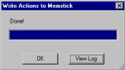

|
|
| Skitter Tutorial #3 - Adding
Skits to YART! |
Contents of this website are freeware and/or copyrighted material, and may not be sold
under any circumstances.
Email: dogsbody@dogsbodynet.com
Home:
https://dogsbodynet.com
|
Adding Skits to YART!
The first tutorial introduced
AIBO motion files (making AIBO move). The second described using the LED & Sound
editors.
Editing skits is ok for a while, but the real fun is
seeing AIBO perform them! This tutorial explains preparing
AIBO programmable memory sticks, and
using them with YART.
It's easy & only takes a few mouse clicks.
Please note currently this tutorial only applies to the
ERS-210, ERS-220, ERS-310, and ERS-7.
Our goals are:
Let's get started!
|
| 1.0
Prepare an Action Directory |
|
An "action directory" is a folder
(on your PC) where you collect the skits you want placed on AIBO.
There is nothing special about this folder, other than it contain the
workbooks (*.aib) for your skits. If using action files
instead (*.act), the action directory would also have folders for
motion, sound, and LED files.
Generally you'll have one action directory for each AIBO personality
you create.
|
 |
|
1.1 Copying & Renaming
skits
1.1.1 Workbooks
Copying or renaming AIBO Workbooks is easy. Just use
Windows Explorer. No muss. No fuss.
1.1.2 Action Files
Copying & renaming action files is harder. You must copy the
action file,
motion, led & sound files. The easiest way is using
Skitter.
Open the target performance in Skitter, and use the File Menu,
"Save-As"
command. Select a new destination action directory, and
Skitter saves copies of all files associated with the performance. |
|
2.0
Prepare the Programmable Memory Stick
|
(1)
|
Download Aibopet's YART / RCodePlus
program. Get the version matching your AIBO (210,
220,
310
& 7).
|
|
|
|
(2)
|
Insert a programmable memory
stick into your memstick reader. Oops, don't have a reader?
Buy one from Sony, since other brands have damaged AIBO
memsticks. Click here for
info.
PMS sticks are different from blue & white sticks, AiboMind,
AiboLife, or other
AIBO-Ware. The memsticks are specially encrypted and -not-
interchangeable. They'll have no label, a blank label, or
an
"AIBO Master Studio" label (see right).
btw, CLIE PDA owners should get StikZip from
Aibopet. Highly recommended.
|
|
|
|
(3)
|
Install YART onto the
memstick. Do not just copy the ZIP file -- it won't
work.
ZIP files are compressed. You must use something like WinZip
to "unzip" YART/RCodePlus onto the memory stick.
|
|
|
|
(4)
|
Open the memstick in Windows
Explorer. If you see CUSTOM, OPEN-R and possibly
PHOTOS, you're good to go!
|
|
|
|
|
|
(1)
|
Start Skitter & close any open skits.
Click on the toolbar "Write"
button. Skitter prompts for the AIBO platform being
used. This must match your AIBO model, or AIBO won't boot
up
properly.
Select your AIBO type (or click Cancel to quit).
|
 |
|
|
(2)
|
Now select the "action directory"
on your PC, where you've collected everything for your AIBO personality.
The example (see right) shows selecting the tutorial directory included
with Skitter.
|
|
|
|
(3)
|
Skitter compiles the action directory, and
writes it to the programmable memory stick.
For large action directories (such as in DogsLife) this might take
several seconds.
|
 |
|
|
(4)
|
Once Skitter displays "Done!" the memstick
is ready, or an error message if something went wrong.
If an error occurred, click on the "View Log"
button to see what happened.
Otherwise, click "OK" to close the dialog.
|
 |
|
|
|
| 4.0
Using New Skits in YART |
(1)
|
Start AiboPet's YART utility on the
memory stick.
It can be found in the memstick "CUSTOM" folder. Double click on "YART.EXE"
from Windows Explorer.
The YART utility allows creating simple AIBO personalities. You
just select events, and use the mouse to drag-n-drop skits.
In YART, using custom user skits is no different than using the builtin
standard skits.
|
|
|
|
(2)
|
From the "When this happens"
box, expand "AIBO voice command", then click "Hello".
From the "Available Actions" category box, select "User
Actions". YART puts all your custom/new skits in this
category.
|
|
|
|
(3)
|
Click-n-drag one of the user actions (ie:
"firstwave"), into the "AIBO does this" box.
|
|
|
|
(4)
|
You're done! Click
the large "Save RCode program to memory stick" button.
Once saving is complete, insert the memory stick into AIBO.
Turn on AIBO, and after booting, try saying "Hello". AIBO
should respond with the custom performance you added.
After three tutorials, you can now create custom skits, add them to
AIBO, and use YART to perform them!
Congratulations!
Got a question? Ask Dogsbody! |
|
|
Legalese: These programs are provided AS IS without any warranty, expressed or implied.
This includes without limitation the fitfulness for a particular purpose or
application. People using the software bear all risk
as to its quality and performance. The user of the software
is responsible for any damages whether direct, indirect, special,
incidental or consequential arising from a failure of these programs to operate in
any manner desired. Etc, etc...
"AIBO" is a registered trademark of Sony Corporation.
"AIBO Master Studio", "R-Code", and "Memory Stick" are trademarks of Sony Corporation.
|
|